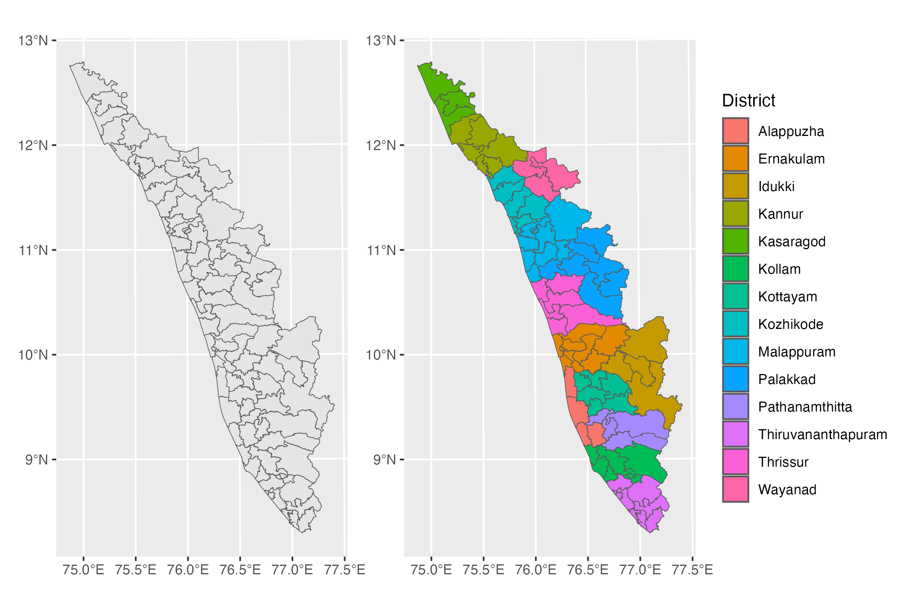

Tuberculosis Units - Kerala
AMCHSS Spatial Data Resources
Welcome to AMCHSS Spatial Data Library
Comprehensive geospatial datasets designed for researchers, GIS professionals, and data scientists.
Discover high-quality Tuberculosis Units spatial data with multiple format options, complete documentation, and ready-to-use examples for your project.
Dataset Overview
This shapefile contains the spatial boundaries of Tuberculosis Units (TUs) in Kerala, India. The dataset represents 77 tuberculosis administrative units across various districts in the state, providing comprehensive coverage for TB surveillance and management purposes.
Multiple Formats
Available in 4+ formats including Shapefile, GeoJSON, R Data, CSV, and KML for interoperability.
Open Access
Available under permissive licensing for academic research, education, and appropriate commercial use.
High-Resolution Data

Downloads
Choose the format that best fits your workflow and analysis platform:
| Format | Description | File Size | Best For | Download |
|---|---|---|---|---|
| Shapefile (.shp) | Traditional GIS format for desktop applications like ArcGIS and QGIS. Includes geometry, attributes, and projection info (.shx, .dbf, .prj files). | ~4.5 MB (zipped) | Desktop GIS, traditional workflows | Download Shapefile |
| R Data (.rds) | Native R format using sf (Simple Features) package. Ready to load directly into R for spatial analysis. Compatible with R ≥3.5.0, requires sf and dplyr packages. | ~5.7 MB | R users, statistical analysis | Download R Data |
| GeoJSON (.geojson) | OGC standard format supporting multiple layers, spatial indexes, and advanced geometries. Modern web-friendly spatial format. | ~18.7 MB | Modern GIS, web applications | Download GeoJSON |
| KML (.kml) | Keyhole Markup Language for Google Earth, web mapping applications, and GPS devices. Includes styled features and descriptions. | ~11.5 MB | Google Earth, web maps, GPS | Download KML |
Download Information
- Last Updated: 02 August 2025
- Version: 1.0.0
- Geometry Type: Polygon
- Total Records: 77 spatial features
- Coordinate System: WGS84 (EPSG:32643)
Documentation
Data Dictionary
| Field Name | Type | Description |
|---|---|---|
fid |
Integer | Feature identifier (1-77) |
District |
String | District name where the TU is located |
TU_Name |
String | Tuberculosis Unit name |
Usage Examples
R (using sf package)
# Load required libraries
library(sf)
library(tidyverse)
# Method 1: Load from RDS file
tu_sf <- read_rds("tuberculosis_units_kerala.rds")
# Method 2: Load from other formats
tu_sf <- st_read("tuberculosis_units_kerala.shp")
# Data Visualization using the `sf` package
# Plot TUs
tu_sf |>
ggplot() +
geom_sf()
# Plot TUs by District
tu_sf |>
ggplot() +
geom_sf(
aes(fill = District)
)Citation and Licensing
How to Cite
When using this data in your research, please cite as:
AMC Data Science Lab. (2025). Tuberculosis Units - Kerala (v1.0) [Dataset]. Retrieved from https://amchss.github.io/amchss-spatial-data
BibTeX:
@misc{amchss_spatial_2025,
title={{Tuberculosis Units - Kerala (v1.0)}},
author={{AMC Data Science Lab}},
year={2025},
version={1.0},
url={https://amchss.github.io/amchss-spatial-data}
}License Information
This dataset is released under the MIT License